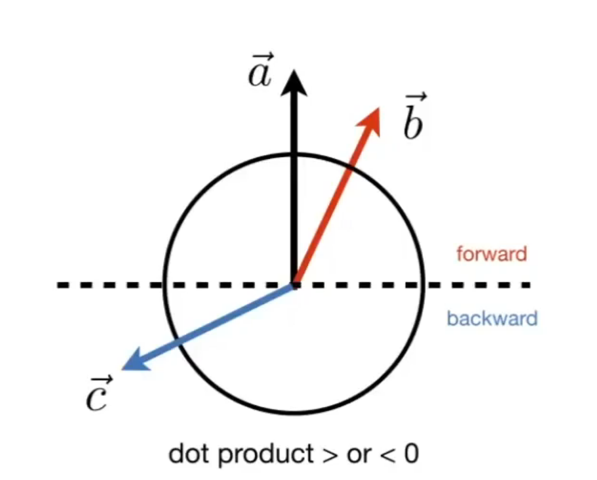

L02 线性代数回顾
图形学基础课程笔记

点乘结果＞or＜0能够确定向量方向在坐标系的正反，处于-1~1之间


叉积、叉乘判断向量的左右；
叉积、叉乘判断点是否在三角形内部：
分别判断 \(\vec{AP}\) 和 \(\vec{AB}\)、\(\vec{BC}\)、\(\vec{CA}\) 是否 \(\vec{AP}\) 一直都在三条边的左边，或者一直都在三角形的右边，那么P点就在三角形内部，如果有一个不一样则在外部。

矩阵乘法暴力解释
26是2行4列找到第一个矩阵的第2行（5 2），第二个矩阵的第四列（4 3）；做点积，5*4+2*3=26
矩阵乘积有结合律、分配律但没有任何交换律